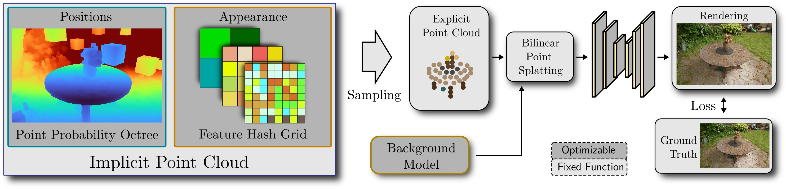

INPC: Implicit Neural Point Clouds for Radiance Field Rendering
arXiv
-
Florian Hahlbohm
TU Braunschweig -
Linus Franke
FAU Erlangen-Nürnberg -
Moritz Kappel
TU Braunschweig -
Susana Castillo
TU Braunschweig -
Marc Stamminger
FAU Erlangen-Nürnberg -
Marcus Magnor
TU Braunschweig

Abstract
We introduce a new approach for reconstruction and novel-view synthesis of unbounded real-world scenes.
In contrast to previous methods using either volumetric fields, grid-based models, or discrete point
cloud proxies, we propose a hybrid scene representation, which implicitly encodes a point cloud in a
continuous octree-based probability field and a multi-resolution hash grid.
In doing so, we combine the benefits of both worlds by retaining favorable behavior during optimization:
Our novel implicit point cloud representation and differentiable rasterizer enable fast rendering while
preserving fine geometric detail without depending on initial priors like SfM point clouds.
Our method achieves state-of-the-art image quality on several common benchmark datasets.
Furthermore, we achieve fast inference at interactive frame rates, and can extract explicit point clouds
to further enhance performance.
Pipeline

We introduce the implicit point cloud, a combination of a point probability field stored in an
octree and implicitly stored appearance features. To render an image for a given viewpoint, we sample
the representation by estimating point positions and querying the multi-resolution hash grid for
per-point features. This explicit point cloud, together with a small background MLP is then rendered
with a bilinear point splatting module and processed by a CNN. During optimization, the neural networks
as well as the implicit point cloud are optimized, efficiently reconstructing the scene.
Point Cloud Sampling
To sample a point cloud for a given viewpoint, we check what voxels are inside the viewing
frustum and downscale probabilities based on voxel size as well as distance to the camera. Next, we
generate a set of positions using multinomial sampling with replacement where each point is randomly
offset inside its corresponding voxel. Lastly, we query a neural field for per-point appearance features.
Results
Comparisons
3DGS
Zip-NeRF
TRIPS
Sampling during Inference
View-Specific Multisampling
Global Pre-Extraction
To achieve the best image quality during inference, we sample multiple viewpoint-specific point clouds for each image and average the rasterized feature maps. Alternatively, we pre-extract a global point cloud that can be used for every viewpoint which boosts frame rates at the cost of image quality.
Concurrent Work
Please also check out RadSplat, a work that also improves upon best-quality baselines in terms of both quality and inference frame rates. They optimize 3D Gaussian model with NeRF-based supervision and achieve high-fidelity novel-view synthesis at remarkably high frame rates. Similarly check out TRIPS, a work that makes use of trilinearly splatted points to render crisp images in real-time.
Citation
@article{hahlbohm2024inpc,
title={INPC: Implicit Neural Point Clouds for Radiance Field Rendering},
author={Florian Hahlbohm and Linus Franke and Moritz Kappel and Susana Castillo and Marc Stamminger and Marcus Magnor},
year = {2024},
eprint={TBD},
archivePrefix={arXiv},
primaryClass={cs.CV}
}Acknowledgements
We would like to thank Peter Kramer for his help with the video as well as Timon Scholz for helping with the implementation of our viewer.
The authors gratefully acknowledge financial support by the German Research Foundation (DFG) for funding of the projects “Immersive Digital Reality” (ID 283369270) and “Real-Action VR” (ID 523421583) as well as the scientific support and HPC resources provided by the Erlangen National High Performance Computing Center (NHR@FAU) of the Friedrich-Alexander-Universität Erlangen-Nürnberg (FAU) under the NHR project b162dc. NHR funding is provided by federal and Bavarian state authorities. NHR@FAU hardware is partially funded by the DFG (ID 440719683).
Linus Franke was supported by the Bayerische Forschungsstiftung (Bavarian Research Foundation) AZ-1422-20.
All scenes shown above are from the Mip-NeRF360 and Tanks and Temples datasets. The website template was adapted from Zip-NeRF, who borrowed from Michaël Gharbi and Ref-NeRF. For the comparison sliders we follow RadSplat and use img-comparison-slider.